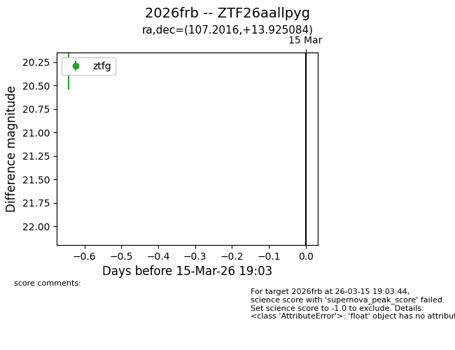
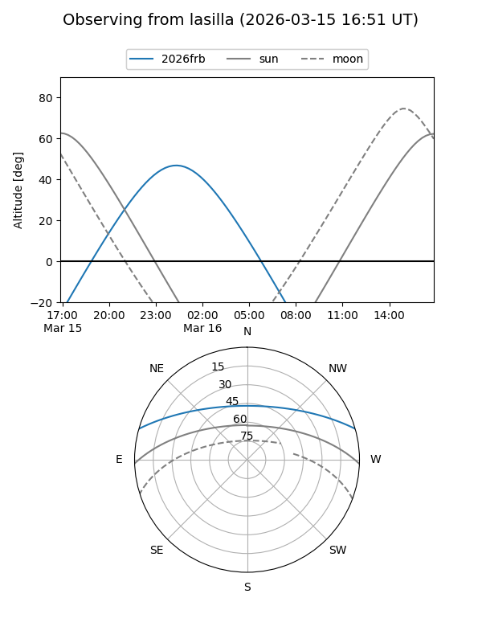
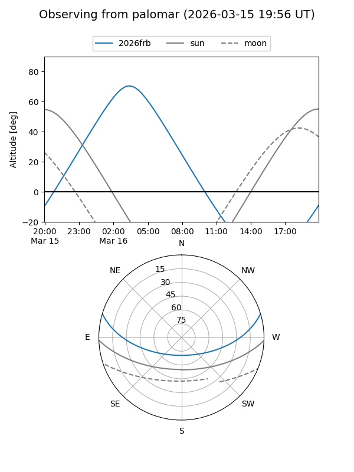

2026frb
Target 2026frb at 2026-03-15 19:05
Aliases and brokers:
FINK: link
Lasair: link
ALeRCE: link
TNS: link
YSE: link
alt names
ZTF26aallpyg (ztf,fink_ztf)
2026frb (tns,yse)
Coordinates:
equatorial (ra, dec) = 107.2016,+13.92508
equatorial (HMS+DMS) = 07:08:48.37,+13:55:30.30
galactic (l, b) = (202.3579,+10.08655)
Flags:
Photometry:
last ztfg=20.35
1 ztfg detections
Lightcurve

Visibility


Additional plots